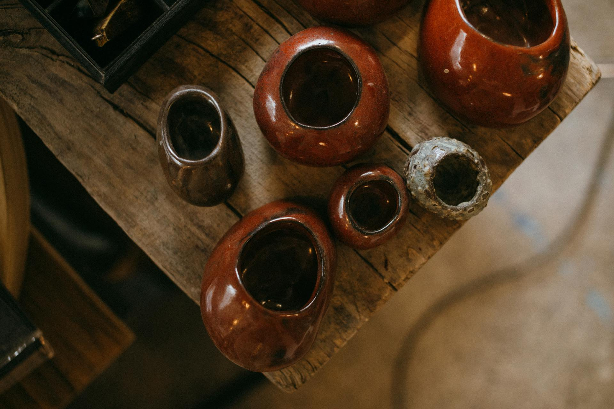
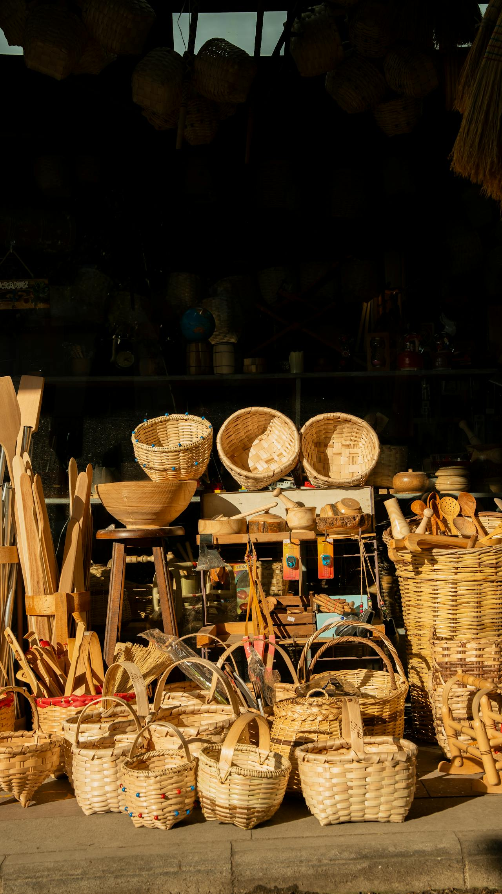

Feria de artesanía de Morella
Explora la creatividad sin límites en nuestras jornadas anuales. Charlas exclusivas, demostraciones en vivo y una exposición de obras innovadoras que reúnen el talento de artesanos de todo el mundo.
Ayuntamiento de Morella
